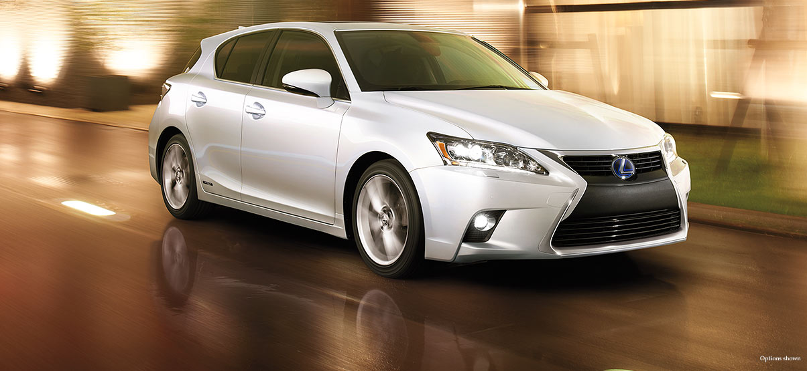
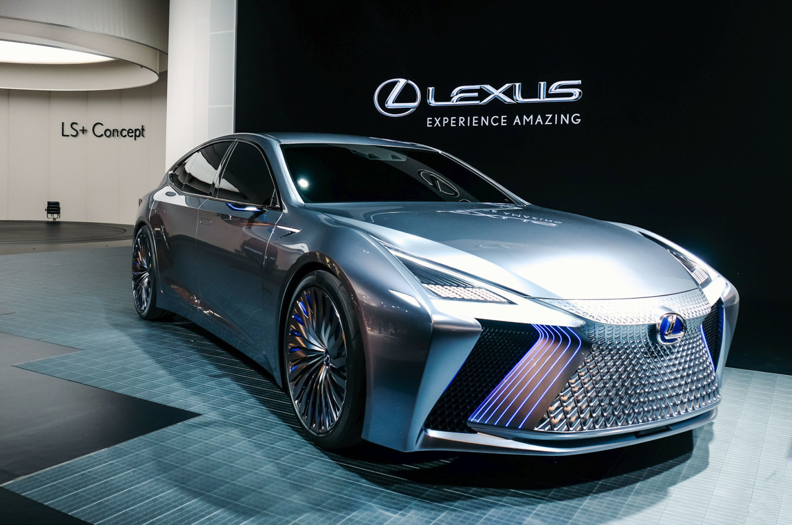
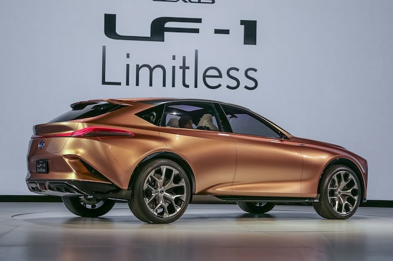

LUXURY LEXUS

The 2017 Lexus CT 200h is what happens when you let the luxury division build a fuel-sipping hybrid. It's literally a previous-generation Toyota Prius underneath, with the CT 200h and Prius sharing a hybrid powertrain, suspension and other basic underpinnings. But the disguise is nearly perfect
luxury Lexus
In the 2015 Lexus NX a Good Used SUV? The Lexus NX is a top used luxury compact SUV, thanks to its balanced handling and upscale, roomy interior. It's also only one of two SUVs in the segment to earn a perfect predicted reliability score. Still, performance junkies might prefer a vehicle with more power under the hood, as the NX doesn’t move away quickly from a stop. Used 2015 Lexus NX Performance and Interior
Lexus-RC-350-Luxury-2015

Lexus RC is a purpose designed two-door sports coupe, not a variant of a four-door sedan as are quite a few competitors in this upmarket field. Thus it cuts down on compromises in style, body strength and suspension dynamics. No one can accuse Lexus of being conservative these days The currently fashionable big-grille treatment has been taken to a new level by the designers at Lexus. It totally dominates the front, and the lower edges look as though they want to go even closer to the road than they already do. No one can accuse Lexus of being conservative these days – a deliberate decision made when Akio Toyoda, the grandson of Toyota's founder, took up the position of president of Lexus and Toyota in 2009.
LexusLS-Coupe-Concep01
Accompanied by a small collection of both raw and finished materials, Itou walked us through the interior details of the 2018 Lexus LS 500, explaining the procedural underlining that the Lexus design teams utilize to explore, identify, and execute the theme of luxury through materials. From Junko Ito, Lexus Interior Designer: I define luxury as the thing that enriches our spirit…the things that move us and allows us to enjoy peaceful time. As a result, I continuously try to embody L-finesse, our design philosophy incorporating the concepts of leading-edge and finesse.
LexusLS-Coupe

I define luxury as the thing that enriches our spirit…the things that move us and allows us to enjoy peaceful time. As a result, I continuously try to embody L-finesse, our design philosophy incorporating the concepts of leading-edge and finesse.
LEXUS-LF